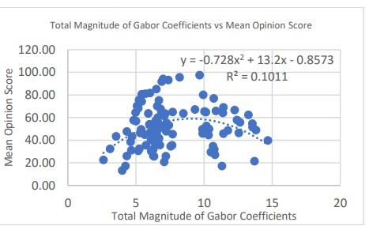
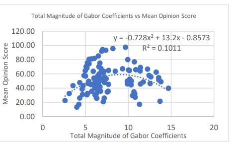
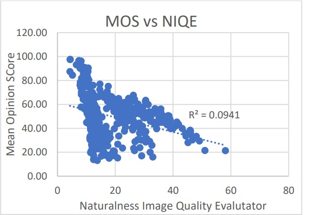
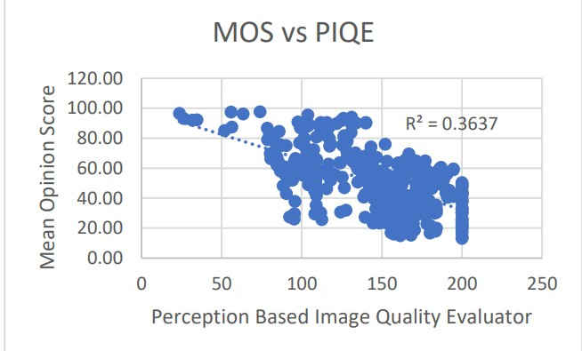
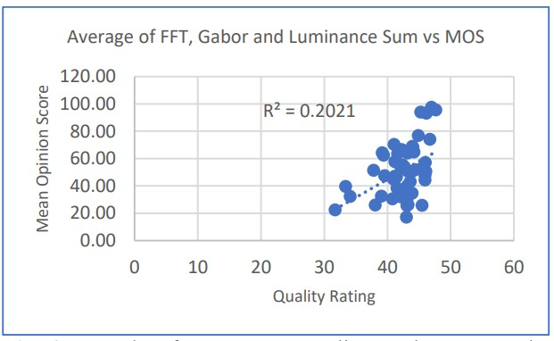

Stereo Image Quality Assessment Project
Background
Image Quality Assessment
The idea of an objective image quality assessment has been an ongoing problem in image processing. A metric that can define an objective quality of an image is very convenient to measure useful properties of an image quickly and effectively.This type of analysis can be used to optimize and benchmark the performance of an assortment of algorithms and image processing methods in the field of digital image processing. Unfortunately, image quality assessment is a very difficult problem to solve, and many attempts at solving image quality assessment result in statistically indistinguishable results.
Stereo Imaging
Stereoscopic imaging uses multiple perspectives of a single scene, giving it an additional ability to detect the distance between the imaging device and the imaged object. Using stereoscopic imaging can perform at high levels in object detection, ranging, and computer vision tasks within a wide variety of applications.One prominent example is in autonomous vehicles, where stereo cameras can be used improve the detection capabilities of a self-driving vehicle. ORB-SLAM3 is one example of an open-source library for this use case, which includes stereo capabilities.
Problem
The goal of this project is to develop a blind image quality assessment algorithm for use within stereoscopic images based on natural statistics found within the composition of the stereo images. For this project, I examined the background of stereoscopic imaging and analyzed metrics of luminance and spectral characeristics with the goal of estimating visual quality.I used the Waterloo IVC 3D Image Quality Database to obtain stereo images and image quality information. This dataset contains high quality stereo image pairs, some of which are subject to symmetric or asymmetric distortions. Each image pair is annotated with a mean-opinion-score (MOS) gathered from subjective human ratings.
Dataset
I first examined and qualified stereo images using
MATLAB. I based this work using the publications and
images provided by the Waterloo IVC 3D Image Quality
Database.
The Waterloo IVC 3D Image Quality Database
Phase II is a database with over 460 stereoscopic image
pairs that have been made from ten very high-quality
stereoscopic images, with varying amounts of distortion,
including asymmetric distortions between the stereo image
pairs.

Fourier Analysis
Fourier analysis was the first method I utilized for assessing the quality of stereo images. It involves analyzing the frequency components of the images and comparing the mean-squared error differences between the FFTs of the left and right image pairs to determine quality discrepancies.
Gabor Transform
Next, I employed the Gabor transform, a technique used to analyze the spatial frequency content in localized regions of the stereo images. This gave further insights into localized discrepancies and details that might not be noticeable at a global level.

A filter bank of sixteen Gabor filters was chosen with wavelengths 𝜆 = 4,8,16 and orientations 𝜃 = 0,30,60 as seen in Figures 3 and 4. After the image was filtered by several Gabor filters, I took local sums of the Gabor filtered image and calculated the sum of all the values in the Gabor filtered image, divided by a scaling factor. From a set of 100 sample images from the IVC 3D Image Database, I found that this total fit a parabolic curve with an R2 value of 0.10, indicating a mild association. The association between the MOS and this metric can be seen in the graph below.
 

Luminance and Contrast Metrics
Lastly, I used luminance and contrast metrics to measure the perceived brightness and contrast in different parts of the stereo images. This accounts for perceptual aspects of visual quality assessment, completing a comprehensive evaluation of the stereo image quality.
Results
Ultimately, the resulting algorithm for blindly calculating the image quality had only a minor association with the
final image. Below is a comparison between 50 images for different image quality evaluators.
First, the Naturalness Image Quality Evaluator:

Next, the Perception-Based Image Quality Evaluator:

Finally, the evaluator created by averaging the statistic from the resulting algorithm:
